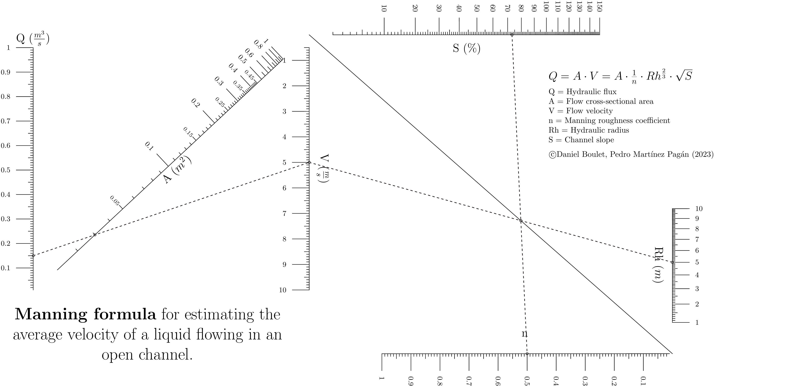

Manning Formula¶
The Manning formula or Manning’s equation is an empirical formula estimating the average velocity of a liquid flowing in a conduit that does not completely enclose the liquid, i.e., open channel flow. However, this equation is also used for calculation of flow variables in case of flow in partially full conduits, as they also possess a free surface like that of open channel flow. All flow in so-called open channels is driven by gravity. [con]
Nomograph¶
Source code¶
1"""
2 manning2.py
3
4 Manning formula for open channel flow
5"""
6import sys
7import numpy as np
8from pyx import *
9
10outputfile = sys.argv[0].split(".")[0] + ".pdf"
11sys.path.insert(0, "..")
12text.set(text.LatexEngine)
13
14from pynomo.nomographer import Nomographer
15
16hydraulic_flux = {
17 "u_min": 0.01,
18 "u_max": 1.0,
19 "function": lambda u: u,
20 "title": r"\Large Q ($\frac{m^3}{s}$)",
21 "tick_levels": 3,
22 "tick_text_levels": 1,
23 "tick_side": "left",
24}
25
26hydraulic_area = {
27 "u_min": 0.01,
28 "u_max": 1.0,
29 "function": lambda u: u,
30 "title": r"\Large A ($m^2$)",
31 "tick_levels": 3,
32 "tick_text_levels": 2,
33 "scale_type": "linear smart",
34 "tick_side": "left",
35 "title_draw_center": True,
36}
37
38cross_sectional_velocity2 = {
39 "tag": "v",
40 "u_min": 0.5,
41 "u_max": 10.0,
42 "function": lambda u: u,
43 # "title": r"V ($\frac{m}{s}$)",
44 "tick_levels": 3,
45 "tick_text_levels": 1,
46 "scale_type": "manual data",
47}
48
49flow_block = {
50 "block_type": "type_2",
51 "f1_params": hydraulic_flux,
52 "f2_params": hydraulic_area,
53 "f3_params": cross_sectional_velocity2,
54 # "mirror_x": True,
55 "isopleth_values": [[0.15, 0.03, "x"]],
56}
57
58cross_sectional_velocity1 = {
59 "tag": "v",
60 "u_min": 0.5,
61 "u_max": 10.0,
62 "function": lambda u: u,
63 "title": r"\Large V ($\frac{m}{s}$)",
64 "tick_levels": 3,
65 "tick_text_levels": 1,
66 "tick_side": "left",
67 "title_draw_center": True,
68 "title_distance_center": -0.5,
69 # "scale_type": "manual_data",
70}
71stream_slope = {
72 "u_min": 1.0,
73 "u_max": 150.0,
74 "function": lambda u: pow(u / 100.0, 0.5),
75 "title": r"\Large S ($\%$)",
76 "tick_levels": 3,
77 "tick_text_levels": 1,
78 "tick_side": "left",
79 "title_draw_center": True,
80 "title_distance_center": 0.75,
81}
82hydraulic_radius = {
83 "u_min": 1.0,
84 "u_max": 10.0,
85 "function": lambda u: pow(u, 2.0 / 3.0),
86 "title": r"\Large Rh ($m$)",
87 "tick_levels": 3,
88 "tick_text_levels": 1,
89 "tick_side": "right",
90 # "title_opposite_tick": False,
91 "title_draw_center": True,
92 "title_distance_center": -0.75,
93}
94manning_coeff = {
95 "u_min": 0.01,
96 "u_max": 1.0,
97 "function": lambda u: u,
98 "title": r"\Large n",
99 "tick_levels": 3,
100 "tick_text_levels": 1,
101 "tick_side": "right",
102 "title_draw_center": True,
103 "title_distance_center": 0.75,
104 # "title_opposite_tick": False,
105}
106
107manning_block = {
108 "block_type": "type_4",
109 "f1_params": cross_sectional_velocity1,
110 "f2_params": hydraulic_radius,
111 "f3_params": stream_slope,
112 "f4_params": manning_coeff,
113 "padding": 0.8,
114 "mirror_x": True,
115 "isopleth_values": [["x", 5.0, "x", 0.5]],
116}
117
118
119main_params = {
120 "filename": outputfile,
121 "paper_height": 5.5 * 2.54,
122 "paper_width": 11 * 2.54,
123 # "make_grid": True,
124 "block_params": [flow_block, manning_block],
125 "transformations": [("rotate", 0.01), ("scale paper",)],
126 "title_str": r"\huge \textbf{Manning formula} for estimating the average velocity of a liquid flowing in an open channel.",
127 "title_x": 5.0,
128 'title_y':1.5,
129 "extra_texts": [
130 {
131 "x": 22.0,
132 "y": 12.0,
133 "text": r"\Large $Q = A \cdot V = \frac{1}{n} \cdot Rh^\frac{2}{3} \cdot \sqrt{S} $ \normalsize \medskip \
134 \par Q = Hydraulic flux \
135 \par A = Flow cross-sectional area \
136 \par V = Flow velocity \
137 \par n = Manning roughness coefficient \
138 \par Rh = Hydraulic radius \
139 \par S = Channel slope \
140 \par \medskip \normalsize \copyright Daniel Boulet (2023)",
141 "width": 12.0,
142 },
143 ],
144}
145Nomographer(main_params)